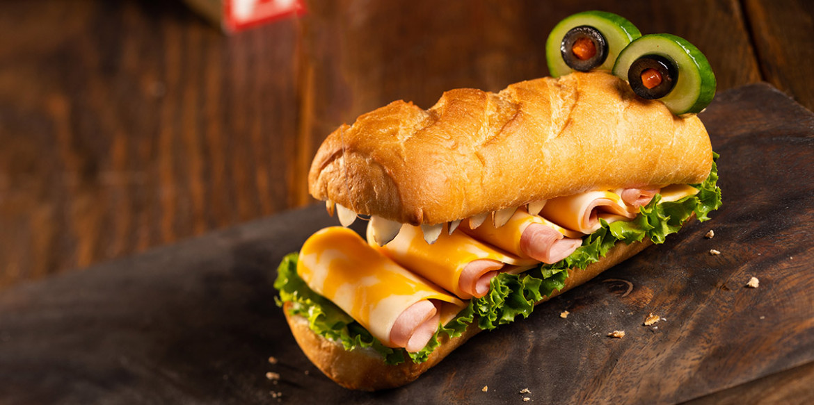

|
|
- 2 ક્લબ અથવા હોગી રોલ્સ, સ્પ્લિટ
- 2 ચમચી. મેયોનેઝ
- 2 પાંદડા પર્ણ લેટીસ, નાના ટુકડાઓમાં ફાટી
- 10 સ્લાઇસેસ ડેલી મધ હેમ
- 5 સ્લાઈસ Sargento® Colby જેક ચીઝ સ્લાઈસ
- 28 ઇએ. કાપેલી બદામ
- 4 ઇએ. બીજ વગરના કાકડીના ટુકડા
- 2 ea. બ્લેક ઓલિવ
- 4 ઇએ. પિમેન્ટો ટુકડાઓ
- 8 ઇએ. ટૂથપીક્સ
|
|
બન્સના ઉપર અને નીચેના ભાગમાં મેયો ફેલાવો.
Step2:
તળિયે બન પર પર્ણ લેટીસ મૂકો. સ્વચ્છ સપાટ સપાટી પર ચીઝ સ્લાઇસના અર્ધભાગ મૂકો.
Step3:
ચીઝની ટોચ પર હેમના ટુકડા મૂકો. ફોલ્ડ કરો, પછી લેટીસની ટોચ પર 5 ફોલ્ડ કોમ્બો સ્લાઇસેસ સહેજ ઓવરલેપ કરો. બદામના ટુકડાને દાંત જેવું લાગે તે માટે ઉપરના બનની કટ સાઇડમાં ચોંટાડો.
Step4:
હેમ અને ચીઝના ટુકડા ઉપર બન ટોપ મૂકો. દરેક ઓલિવમાં પિમેન્ટોના ટુકડા મૂકો. બનના અડધા ભાગમાં ઓલિવ ચૂંટો.
Step5:
ઓલિવ પાછળ ફિટ કાકડીઓ કાપો. કાકડી ઓલિવ સંયોજન મગરની આંખો જેવું હોવું જોઈએ. શાળા પછીના નાસ્તા તરીકે સેવા આપો.